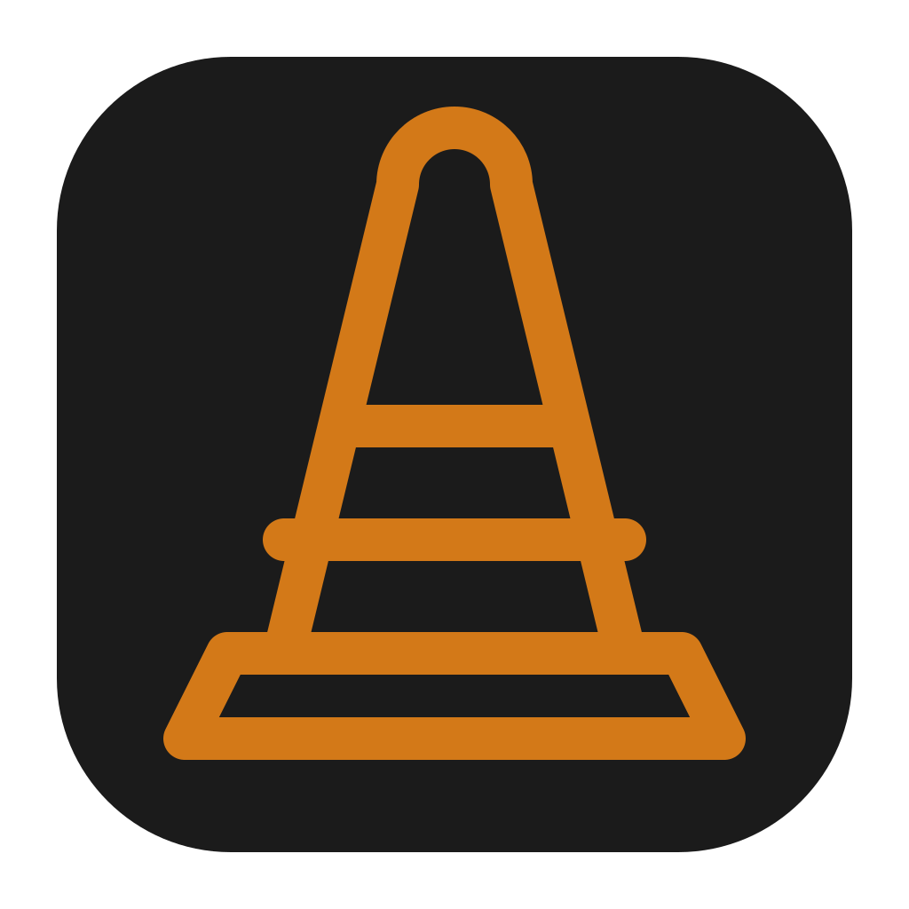
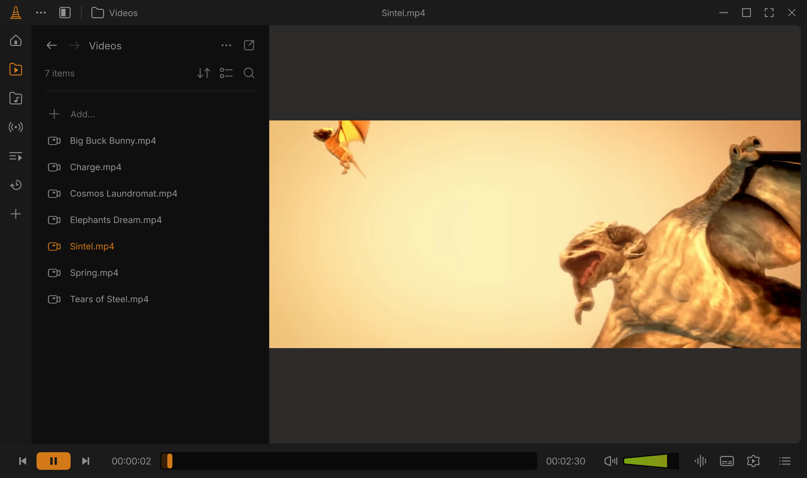
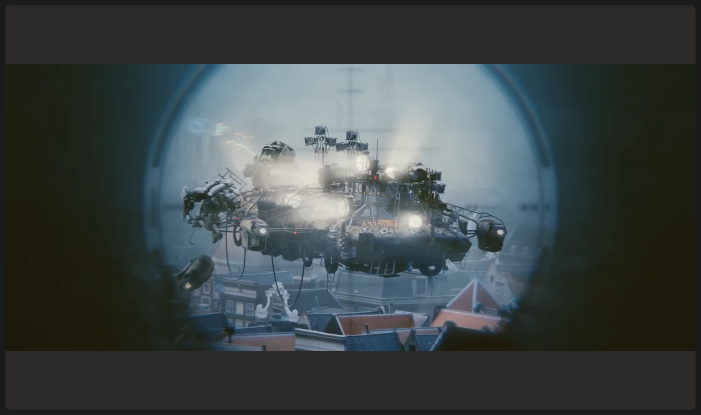
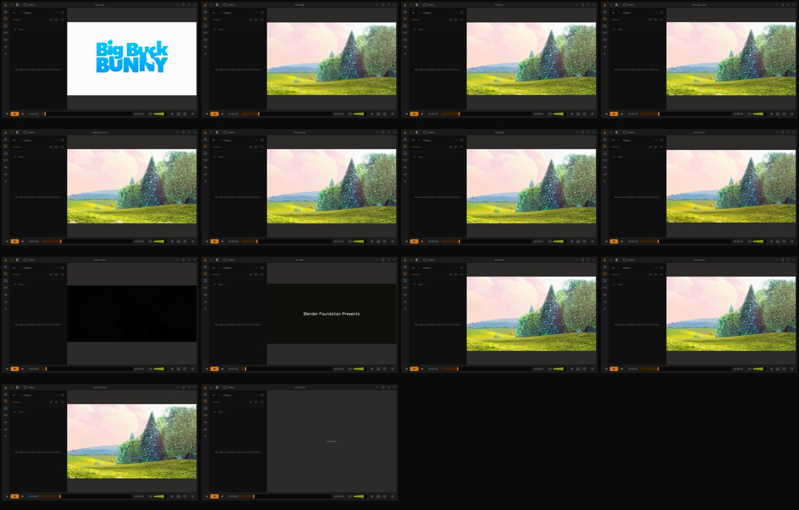

Powered by libVLC
Bring your files.
The libVLC engine plays almost anything, from old home videos to your latest lossless album.

Konus GitHubOpen source · based on VLC
The playback you know, with a little more room to breathe.
For macOS, Windows & Linux

Konus is a fan-built, working take on Juxtopposed’s VLC redesign. All design credit goes to her.
Design adapted under CC BY 4.0, with layout and interaction changes for this implementation. Unofficial; not affiliated with VideoLAN or Juxtopposed.
Familiar essentials.
A calmer place to use them.
The libVLC engine plays almost anything, from old home videos to your latest lossless album.
Keep videos and music close. Collapse the library when it’s time to watch.
After 2.5 seconds of stillness, the chrome steps out of the picture.

The essentials are a keypress away.
Focused library lists and volume controls use arrow keys for navigation.
Switch subtitles and audio tracks without leaving your video.
Packaged for macOS, Windows and Linux. Pick your build and press play.
Find your downloadVideo, audio, old favorites.
Here’s a look at actual playback.

Choose a desktop. Get the latest release.
Apple silicon · macOS 14.4+
Download ZIPExtract the ZIP. Open Konus.
Download ZIPx86_64 · AppImage
Download AppImageBuilds are unsigned or ad-hoc signed, and not notarized.
See the README for “Open Anyway” steps before your first launch.